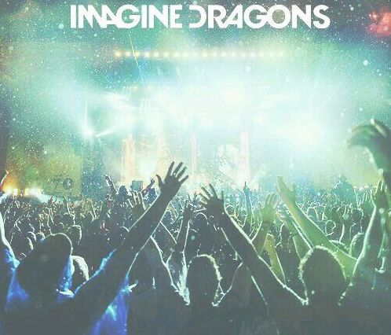
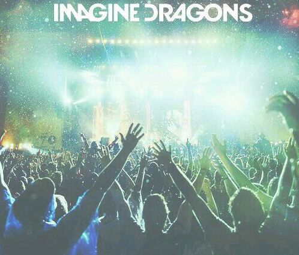

Hieronder vinden jullie die iconen die op de website
beschikbaar zullen staan om door te gaan naar de verschillende sociale media's van de band.

Hieronder zullen de knoppen worden weergegeven
die op de website zullen gebruikt worden.